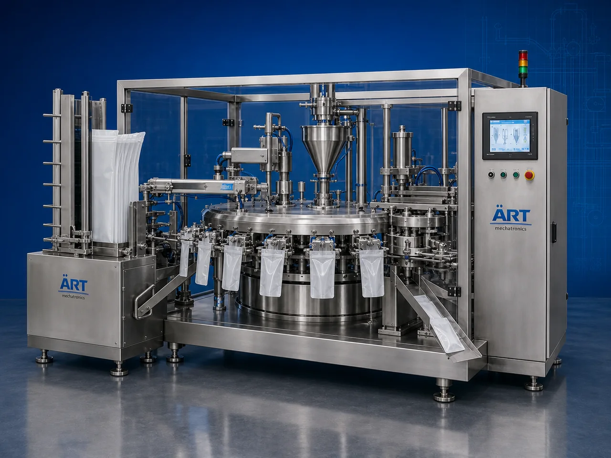

Premade Pouch Packing Machine (Automatic Premade Pouch Filling & Sealing System)
A Premade Pouch Packing Machine, also known as an Automatic Premade Pouch Packaging Machine, Premade Pouch Filling Machine, or Premade Pouch Sealing Machine, is an advanced industrial packaging solution designed for automatic premade pouch feeding, pouch opening, filling, weighing, sealing,…

About the Premade Pouch
Premade pouch packaging systems are widely used for: ✔ Stand-up pouch packaging ✔ Zipper pouch packaging ✔ High-speed pouch filling ✔ Premium retail packaging ✔ FMCG packaging lines ✔ Continuous industrial packaging
The machine improves: ✔ Packaging appearance ✔ Filling accuracy ✔ Product hygiene ✔ Shelf life protection ✔ Production efficiency ✔ Labor productivity
Industrial premade pouch packing machines use: ✔ Automatic pouch pick-up systems ✔ Servo synchronized filling technology ✔ PLC and HMI automation controls ✔ Precision sealing systems ✔ Rotary or linear pouch handling mechanisms
to automatically fill and seal premade pouches with superior packaging quality and high production efficiency.
Premade pouch packing machines are widely used in industries such as:
Pan masala & mouth freshener industries
Food processing industries
Spice industries
FMCG industries
Pharmaceutical industries
Cosmetic industries
Chemical industries
Dry fruits & nuts industries
where premium pouch packaging and attractive retail presentation are essential.
The machine is highly suitable for: ✔ Stand-up pouch packaging ✔ Zipper pouch filling ✔ Snack packaging ✔ Spice packaging ✔ Dry fruit packaging ✔ Premium FMCG packaging
ART Mechatronics offers high-performance premade pouch packing machines, engineered for continuous industrial operation, accurate filling, premium sealing quality, and reliable long-term packaging automation.
Working Principle of Premade Pouch Packing Machine
Empty premade pouches are loaded into pouch magazine section
Automatic system picks and opens pouch accurately
Servo synchronization ensures smooth pouch handling and positioning.
Machine handles: ✔ Powders ✔ Granules ✔ Liquids ✔ Paste products ✔ Snacks ✔ Dry fruits ✔ Pan masala products accurately and continuously.
Machine performs: Heat sealing Zipper sealing Airtight sealing Nitrogen flushing (optional) for hygienic and premium packaging quality.
Optional systems include: Batch coding Date printing QR code printing Metal detection Check weighing
Finished pouches discharged automatically for: Cartoning Retail display Secondary packaging Dispatch operations
Types of Premade Pouch Packing Machines
- 1. Rotary Premade Pouch Packing Machine
Designed for: ✔ High-speed industrial pouch packaging applications
- 2. Stand-Up Pouch Packaging Machine
Suitable for: ✔ Doypack and stand-up pouch applications
- 3. Zipper Pouch Packing Machine
Uses: ✔ Resealable premium packaging systems
- 4. Food Grade Premade Pouch Machine
Designed for: ✔ Hygienic food and pharmaceutical packaging systems
- 5. Servo Driven Premade Pouch Machine
Suitable for: ✔ Precision high-speed pouch packaging operations
- 6. Fully Automatic Premade Pouch Packaging System
Designed for: ✔ Complete industrial packaging automation lines
Industries Using Premade Pouch Packing Machines
🌿 Pan Masala & Mouth Freshener Industry Pan masala, supari, sweet supari, elaichi, and mouth freshener pouch packaging systems 🌶️ Spice Industry Turmeric, chilli powder, herbs, seasoning, and spice pouch packaging systems 🍃 Food Processing Industry Snack, namkeen, cereals, grains, pulses, and ingredient packaging systems 🥜 Dry Fruits & Nuts Industry Almonds, cashews, pistachios, makhana, peanuts, and dry fruit packaging systems 🛒 FMCG Industry Premium consumer pouch packaging systems 💊 Pharmaceutical Industry Nutraceutical and healthcare pouch packaging systems ⚗️ Chemical Industry Powder and granule chemical pouch packaging systems 🧴 Cosmetic Industry Cosmetic cream, powder, and personal care pouch packaging systems
Features & Advantages
✔ High-speed automatic pouch filling and sealing operation ✔ Premium retail packaging appearance ✔ Accurate filling and synchronized pouch handling ✔ Supports stand-up and zipper pouch formats ✔ PLC and servo automation control systems ✔ Improves product shelf life and hygiene ✔ Reduces packaging wastage and labor dependency ✔ Hygienic food-grade construction available ✔ Reliable long-term industrial performance
Technical Highlights
Machine Type: Rotary premade pouch machine Stand-up pouch packaging machine Zipper pouch filling machine Packaging Material: Laminated pouches Stand-up pouches Zipper pouches Doypack pouches Filling Integration: Multihead weighers Auger fillers Liquid fillers Cup fillers Features: PLC control system Servo synchronization Touchscreen HMI Nitrogen flushing optional Batch coding integration Sealing Type: Heat seal Zipper seal Airtight seal Automation: Semi-automatic Fully automatic industrial systems
Turnkey Premade Pouch Packaging Solutions
ART Mechatronics offers: Complete premade pouch packaging systems Pouch filling and sealing solutions Packaging automation integration systems Conveyor synchronization systems Installation & commissioning After-sales service & AMC
Why Choose Art Mechatronics
Expertise in industrial packaging and automation systems Customized premade pouch packaging solutions for multiple industries High-performance and durable packaging technology Advanced PLC and servo automation systems Proven industrial packaging performance across sectors
Applications
Pan Masala Manufacturing Plants Food Processing Industries Spice Processing Plants Dry Fruit Packaging Units FMCG Packaging Facilities Pharmaceutical Industries
Industries that use the Premade Pouch
Get pricing & specs for the Premade Pouch
Share the product, target capacity, current process and plant location. These details help our engineers discuss the right machine or line configuration.
One partner, from design to start-up
ART Mechatronics designs, manufactures, installs and commissions your Premade Pouch solution with regional presence in India, UAE and Thailand.